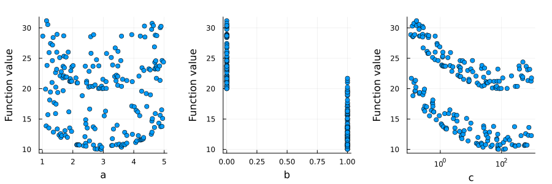
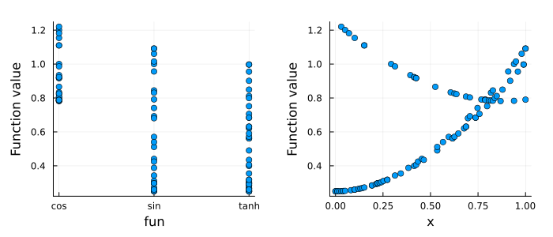
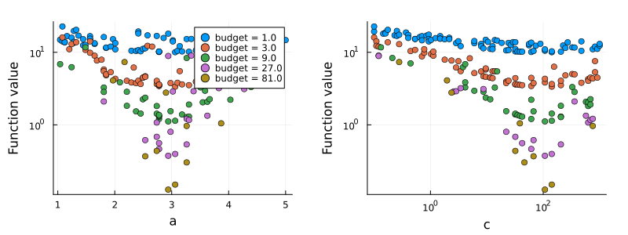

Plotting
Hyperopt defines a plot recipe for Hyperoptimizer, which Plots.jl uses for plot(ho). The plot contains one subplot per hyperparameter, which shows the results against the values of the hyperparameter. The plot indicates which hyperparameters have a large effect on the results, and whether the optimum is located at the boundary of the candidate range.
- A logarithmic axis is used for the results and for a hyperparameter if all values are positive and the ratio of the smallest to the largest value is less than $2 \cdot 10^{-2}$.
- The values of a hyperparameter that is not real-valued, e.g., a function, are shown as categories.
- Results that are
NaNor infinite are not shown. - For a
Hyperoptimizerwith aHyperbandsampler, the results of each budget are shown as a separate series.
The documentation is built with the GR backend of Plots.jl. On a computer without a display, e.g., in continuous integration, GR is used in headless mode by setting ENV["GKSwstype"] = "100" before Plots.jl is loaded.
Plot attributes given to plot, e.g., layout and size, take precedence over the defaults of the recipe.
Random search
using Plots
f(a, b, c) = (a - 3)^2 + (b ? 10 : 20) + (log10(c) - 2)^2
ho = @hyperopt for i = 200,
a = LinRange(1, 5, 1000),
b = [true, false],
c = exp10.(LinRange(-1, 3, 1000))
f(a, b, c)
end
plot(ho, layout = (1, 3), size = (900, 300), margin = 5Plots.mm)
Categorical hyperparameters
ho = @hyperopt for i = 100, fun = [tanh, sin, cos], x = LinRange(0, 1, 100)
fun(x) + (x - 0.5)^2
end
plot(ho, size = (700, 300), margin = 5Plots.mm)
Hyperband results
The loss in the following example decreases with the budget, and the loss obtained with a small budget indicates the loss obtained with the largest budget:
ho = @hyperopt for budget = 81, sampler = Hyperband(η = 3), a = LinRange(1, 5, 100), c = exp10.(LinRange(-1, 3, 100))
(a - 3)^2 + (log10(c) - 2)^2 + 10 / budget
end
plot(ho, size = (800, 300), margin = 5Plots.mm)